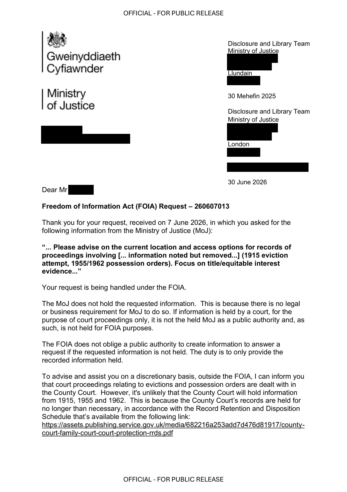

GHF-E106-R100-A1 not held
Requester - 260607013 - FOI - response.pdf

Transcript
OFFICIAL - FOR PUBLIC RELEASE OFFICIAL - FOR PUBLIC RELEASE Requester [email redacted] Disclosure and Library Team Ministry of Justice [address redacted] Llundain [address redacted] 30 Mehefin 2025 Disclosure and Library Team Ministry of Justice [address redacted] London [address redacted] [email redacted] 30 June 2026 Dear Requester Freedom of Information Act (FOIA) Request – 260607013 Thank you for your request, received on 7 June 2026, in which you asked for the following information from the Ministry of Justice (MoJ): “... Please advise on the current location and access options for records of proceedings involving [... information noted but removed...] ([1915 wording removed by Cedwyn editors: no record of an eviction in 1915 is found], 1955/1962 possession orders). Focus on title/equitable interest evidence...” Your request is being handled under the FOIA. The MoJ does not hold the requested information. This is because there is no legal or business requirement for MoJ to do so. If information is held by a court, for the purpose of court proceedings only, it is not the held MoJ as a public authority and, as such, is not held for FOIA purposes.
Read more
The FOIA does not oblige a public authority to create information to answer a request if the requested information is not held. The duty is to only provide the recorded information held. To advise and assist you on a discretionary basis, outside the FOIA, I can inform you that court proceedings relating to evictions and possession orders are dealt with in the County Court. However, it's unlikely that the County Court will hold information from 1915, 1955 and 1962. This is because the County Court’s records are held for no longer than necessary, in accordance with the Record Retention and Disposition Schedule that’s available from the following link: https://assets.publishing.service.gov.uk/media/682216a253add7d476d81917/county- court-family-court-court-protection-rrds.pdf OFFICIAL - FOR PUBLIC RELEASE OFFICIAL - FOR PUBLIC RELEASE Under the Public Records Act, older County Court records that are selected for permanent preservation (after 20 or 30 years) are transferred to an approved archive. You may wish to contact The National Archive (TNA) or local archives, such as Glamorgan Archives, to see if they can help. You can obtain information about them from: • https://www.nationalarchives.gov.uk/ • http://www.glamarchives.gov.uk/ Appeal Rights If you are not satisfied with this response, you have the right to request an internal review by responding in writing to one of the addresses below within 40 working days of the date of this response. [email redacted] [address redacted] You do have the right to ask the Information Commissioner’s Office (ICO) to investigate any aspect of your complaint. However, please note that the ICO is likely to expect internal complaints procedures to have been exhausted before beginning their investigation. Yours sincerely, Operational Support - Knowledge and Information Liaison Officer National Support Unit | HM Courts &Tribunals Service Cymorth Gweithredol - Swyddog Cyswllt Gwybodaeth Uned Gymorth Genedlaethol | Gwasanaeth Llysoedd a Thribiwnlysoedd EF
Artifact description
States the Ministry of Justice does not hold the requested court proceeding records and suggests the County Court as a discretionary pointer.
| Catalogue ID | GHF-E106-R100-A1 |
|---|---|
| What it is | PDF document from Ministry of Justice / HMCTS. Attached to an email received on 30 June 2026, their reference 260607013. 2 pages. |
| From | Ministry of Justice / HMCTS |
| Email received | 30 June 2026 |
| Their reference | 260607013 |
| Pages | 2 |
| File | Requester - 260607013 - FOI - response.pdf (119 KB) |
| State | Read |
Our integration
Part of the SAR thread with Ministry of Justice / HMCTS opened 30 June 2026. The thread's standing classification is “not held”. Statutory time: met.
Concern to test: whether this reply answers the question as asked, or a narrower one. Not checked against the original request wording here.
What cuts against the case: a nil return is common for records of this age and is evidence of absence only if the search was adequate; nothing here shows a record was kept back.
Related: The covering email · What They Don’t Say: WTDS-faf365db-1 · EV-0414 in the evidence catalogue · Timeline · Disclosure Dartboard